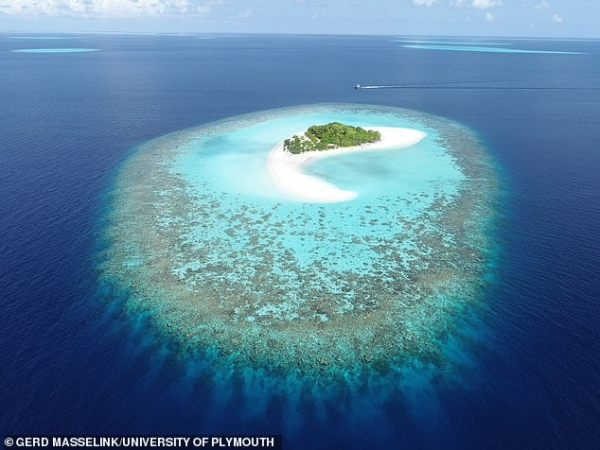
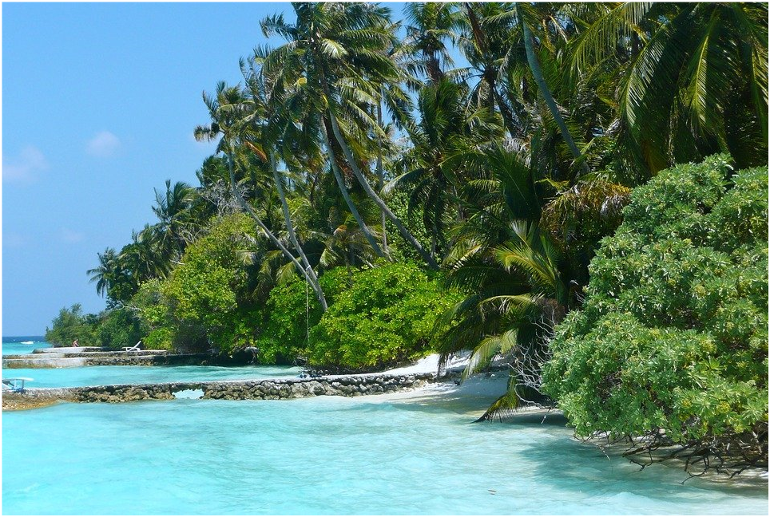
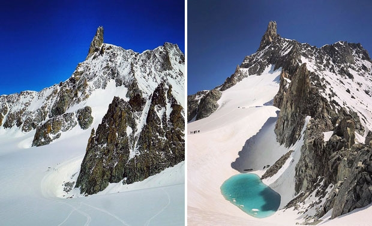
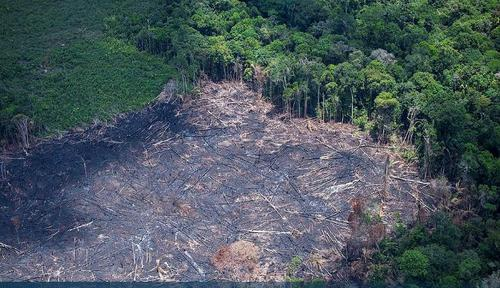

1. 투발루
8개의 산호섬으로 이루어진 투발루는 지구 온난화 때문에 세계 지도에서 사라지는 나라중 하나이다.
투발루는 지금도 계속 지구 온난화로 해수면이 올라가고 있어서 50년 후 정도면 지도에서 사라질 위기이다.
투발루의 섬 중 하나인 사빌리빌리 섬은 이미 1999년에 바닷속으로 잠겼다.
출처 : Pixabay
2. 몰디브
몰디브는 정말 아름다운 자연경관으로 천혜의 휴양지로 관심받고 있는 곳이다.
몰디브는 해발고도가 낮아 현재도 지구 온난화로 인해 조금씩 바닷속으로 가라앉고 있다. 지난 2009년에는
지구 온난화를 막기 위한 수중회의가 열려 화제가 되기도 했었던 몰디브 역시 2100년쯤에는 몰디브가
바닷속으로 완전히 가라앉아 지구상에서 찾아볼 수 없을 것이다.
 출처 : (왼)Daily Mail (오)MBC
3. 알프스
알프스산맥에 있는 모든 빙하는 지난 수십 년간 계속해서 길이가 줄면, 2100년이면 유럽 산꼭대기를 덮고
있는 얼음들이 모두 없어질 것이다. 알프스산맥의 빙하가 녹으면 유럽 전역의 강가에 영향을 받게 되고,
홍수나 산사태 같은 자연재해도 많아질 것이다.
 출처 : NOWnews
4. 아마존
지구 온난화는 아마존의 환경 역시 변화시키고 있다. 아마존 우림은 지구의 열대 우림지의 절반 가까이 차지하며
지구의 산소 20%를 공급한다. 하지만 지구 온난화로 인해 아마존 열대 우림이 사라지면 나무와 식물들은 이산화탄소를
흡수하고 썩으면 그동안 몸에 저장해둔 탄소를 방출한다. 온실 가스가 대기로 방출되면 대기질과 온도에 영향을 미치고
지구 온난화를 가속화 시킨다. 또 가뭄이 일어나면서 동시에 기후변화도 가속화 될 것이다. 지구온난화 현상의 확산을
막기 위한 절실한 노력이 필요하다.
 출처 : Greenpeace